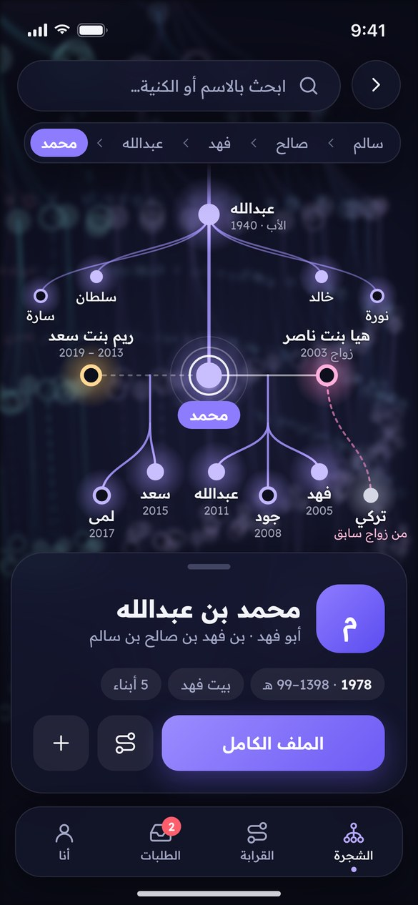
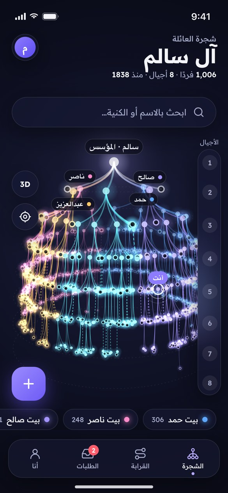
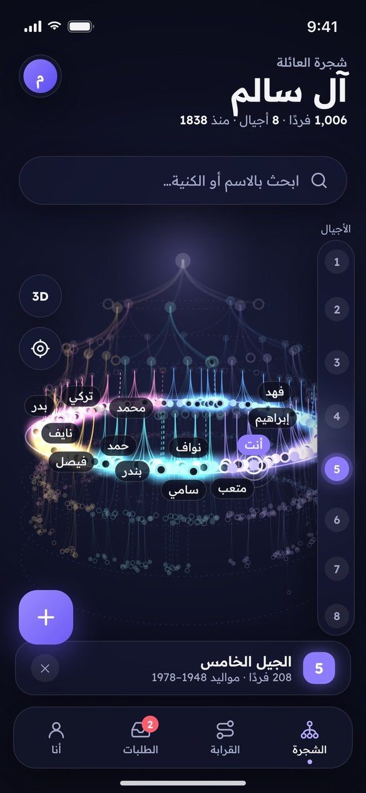

A man's wives, each with her own children; a wife's son from a previous marriage on a dashed line

A daughter with a current and a previous husband from outside the family (name only)
How we record our lineage (fathers, mothers, wives, children and photos) so that it stays private, is approved by the people the family trusts, and survives long after any of us.
Everyone should read Section 1 (a short overview, including where things stand). Technical reviewers should focus on Sections 6–8 (security, recovery and hosting). Section 13 lists the questions we most need your opinion on. Every part is marked, so you know what exists and what is open for discussion:
Built in the app, and tested (Section 1 says what is live) · In progress decided and being built now · Decided agreed, not built yet · Proposed open for discussion
Built and tested on 21 November 2026. The root admin can act as a member (Section 4, "Acting as a member"). When someone says the app does not let them do something, the root admin opens their profile, taps «العمل بصفته» and sees the app as that member's phone shows it: their place in the tree, what the privacy rule lets them see, and their key. The root admin can then send, approve and refuse as them, to try what they tried. Every entry made this way is signed with the root admin's key, counts for the member only by the rules their own phone would meet, and shows on every phone as «مشرف العائلة بصفة …»; the member's own «أنا» says how often, and when last. Their devices, recovery kit, Face ID lock and keys are never reached this way, nor anything only the root admin or the platinum holder may do. On an iPhone or iPad the family opens only from its app on the Home Screen (Section 9, "Installing it as an app"). Safari erases a site's storage, the family's keys with it, after seven days without a visit, and never shares it with the installed app. A link opened in Safari is now only copied, to paste in the app with «لصق رابط». A member already in Safari moves into the app with «نقل حسابي إلى التطبيق», and the root admin copies the admin link and then removes it from Safari.
family.json kept for now.family.json as a plain copy until backups exist.Family Tree is a private web app for recording a family's lineage (fathers, mothers, wives, children and photos) across generations. It is built first for our own large family, and it is live. It is designed so that other families could later join a hosted service or run their own copy, but that is postponed: our family comes first.
Every record is encrypted on family members' own phones; whoever hosts it can never read it. Changes are proposed by members and approved by the family's key holders (platinum, gold and silver) of the relevant branch, the way families already decide such matters. While the family is being set up, a root admin (مشرف العائلة) enters the tree, invites the members and hands out the keys. The design aims to keep the archive alive for decades with nothing more than a domain, a payment method and a few family members with some IT knowledge.
family.json)Several devices, automatic renewals, the recovery kit as a backup key, the write check, the review's fixes, everything new in version 1.7, the fixes of version 1.8, «ربط أبناء» of version 1.9 the root admin's decisions on requests of version 1.10, the women's privacy setting of version 1.11, back and refresh of version 1.12, the duplicate question switched off in version 1.13, the names of daughters' children and the spouse suggestions of version 1.14, the limit on requests of version 1.15, the mourning band of version 1.16, the generation view of version 1.17, key holders approving their own of version 1.18, approval as it is sent of version 1.19 went live with the deploys of 1 November 2026, and the levels worked out on every phone of version 1.20 deaths as requests of version 1.21, opening with no connection of version 1.22, the copy of the log of version 1.23, relations by marriage of version 1.24, per-person keys of version 1.26 (the move made by the root admin the same day), the version check of version 1.27, the fix of version 1.28, and the rest of privacy and keys of version 1.29 on 2 November, and exporting the tree of version 1.30, with the corrections by anyone of version 1.31 and removals by request of version 1.32, on 3 November, and every way two people are related, of version 1.33, and the routes through an ancestor the other comes from another way, of version 1.34, on 6 November, and milk kinship, of version 1.36, on 16 November, and the fixes of version 1.37 and acting as a member and iPhones from the Home Screen of version 1.38, on 21 November; the write check takes hold once the root admin's phone registers the write key (Section 8). Not tested yet on the family's own phones: which of them give the Face ID lock its PRF secret, and how long Argon2id takes on the oldest (Sections 7 and 12).
No national IDs, no phone numbers, no addresses. Birth year only. Data we never collect can never leak.
All data is encrypted and decrypted only on members' devices. A server breach exposes nothing readable.
No single person, phone, key, email address or provider can expose the archive or destroy it. Not met yet: today the shared family key and the admin link are such points (Sections 4 and 6).
Web only, open formats, minimal moving parts, and an archive that can open itself even if this project disappears.
Face ID instead of passwords, one-tap approvals, Arabic first, large text, assisted setup by a younger relative, and the option to delegate to a trusted relative.
| Topic | Decision |
|---|---|
| Platform | A mobile-friendly web app (PWA) that installs to the Home Screen. No app-store apps, ever. App stores force constant updates and can remove apps; the web keeps working for decades. |
| Hosting | One Cloudflare Worker serves the app and a small API. Each family's log lives in its own Durable Object, a tiny store with its own SQLite database that holds encrypted entries only. The same code self-hosts on Node. |
| Scope | Generic, for any family. Our family is the first, and is live. A service for other families is postponed. |
| Family model | A graph, not a simple tree: cousin marriages, multiple wives and women in several roles are normal. Every child is linked to his specific mother, milk kinship is recorded, and every person has a name, stored exactly as entered, plus any number of aliases. |
| Governance | Leadership keys with fixed seats: 1 platinum for the whole family, 2 gold and 3 silver per main branch. Each branch approves what touches its own people; platinum is the head of the family and can override. For now a root admin works alongside the keys and fills the seats; elections come later. |
| Joining | Every member joins through a personal invite (a link and QR code that names them), which works once, on one phone; from there they can add more phones and browsers. View-all and view-only guests are granted by the root admin or the platinum holder. |
| Branches | Main branches are named and marked. Each chooses to be part of the big family or separate, so large families and tribes can keep branches apart. |
| History | Every change is a transaction: signed, tracked forever, and reversible by a new, approved "revert" transaction. History is never erased, including the root admin's direct changes. |
| Privacy | Men's names are visible within your sharing circle. Women's details are visible to relatives within the 3rd degree of kinship, counted the way GCC bereavement leave is counted; the root admin or the platinum holder can widen this to the 4th, 5th or 6th degree, or lift it, for the whole family. Today the app enforces this on members' phones; per-person keys are planned. |
| Dates | Gregorian is the main calendar; every date can be entered or viewed in Hijri. Year only by default. |
| The tree | An interactive 3D tree with the founder at the top and generation levels you can filter, a classic 2D chart, and a family card for each person: their parents, spouses, children, brothers and sisters, a tap away. |
| Encryption | End-to-end, over a signed, hash-chained, append-only log. Today one family key, renewed whenever someone loses access, and a signing key per device; the server takes a new entry only with the current key's write key. Planned: many small keys (no master key) and post-quantum protection. |
| Login and recovery | A personal invite links a phone to a person, who can then add more phones and browsers («أجهزتي»). An optional Face ID / fingerprint lock seals what each phone stores, and a passphrase-protected recovery kit is a backup key of its own. Planned: recovery through the family (x of N key holders). |
| Photos | Many photos per person over a lifetime. Only single-person crops are stored; group photos never leave the phone. Not built yet. |
| Field | Rule |
|---|---|
| Name | Given name and family name, stored exactly as entered; search ignores spelling differences (Section 3). The name chain (bin father bin grandfather) is derived from the tree when the father is in it; a daughter's child whose father from outside is recorded takes the given name, followed by the father's full name as recorded; it is typed in full only when no father is recorded. Optionally, a word after the name («للتمييز») tells apart brothers or sisters of the same name (Section 3). |
| Aliases | Any number: kunya, laqab, "known as", previous name, other spellings (Section 3). |
| Gender | Required. It drives the visibility rules. |
| Birth year | Year only. Gregorian is the main calendar; a year entered in Hijri is kept as entered (Section 3). May be approximate ("c. 1350 AH"). Day and month are optional, discouraged, and shown with a privacy note. |
| Death year | Same rule as the birth year. Never the cause or place of death (Section 3). |
| Sibling order | Explicit order among siblings, so seniority (eldest son, order of brothers) never depends on exact dates. |
| Living / deceased | Deceased relatives are records maintained by the family. Anyone born more than about 110 years ago is treated as deceased automatically. |
| Relationships | Father and his specific wife as mother (through their marriage), marriages, and milk kinship (Section 3). |
| Photos | Single-person photos with an approximate age or year (Section 10). |
Built today: name and «للتمييز», other names, gender, birth and death years in either calendar (approximate allowed; when adding a child the year slider reaches back to 1700, or 1110 AH; a birth year can also be left unknown, «سنة الميلاد غير معروفة», and added later), deceased, father and mother, marriages with their status and years, and a "link not confirmed" mark for gaps in the family's printed chart. Later: sibling order, milk kinship and photos.
National ID, iqama, passport: no field exists for them.
Phone numbers, emails, home addresses, workplace, current location.
Not by default. A full name plus an exact date of birth is an identity-theft risk.
Only single-person crops are uploaded. The original never leaves the phone.
GPS location, phone model and time are stripped from every photo before encryption.
No divorce reasons, health information or cause of death. (Marriage status and years are recorded; reasons never.)
People will type a phone number into any notes box. Free-text fields are kept to a minimum. Built: other names and device names refuse anything with five or more digits, an email address or a link, which covers phone and GCC ID numbers.
Key holders (platinum, gold and silver) will register an email address only for account recovery. It will be the only contact data in the system. It is readable by the server (it has to be, to send the email), encrypted at rest with a separate server key, kept apart from family data, and deleted when they give up their key. Regular members have no contact data at all. Not built yet: today the app holds no contact data of any kind.
Authority and lineage look like trees, but a GCC family is not a simple tree. Cousins marry, a man may have several wives, a widow may remarry, and the same woman is a daughter in one branch and a wife and mother in another. So the design keeps three separate structures.
| Structure | Shape | Purpose |
|---|---|---|
| Lineage graph | Graph | Who is whose father, mother or spouse. Supports cousin marriage, multiple wives, successive marriages and half-siblings. |
| Authority tree | Tree | Branches anchored at a male ancestor ("descendants of Ahmed"), each led by its own key holders (Section 4). |
| Key hierarchy | Many small keys | Who can decrypt what (Sections 5 and 6). Planned: today one family key opens everything. |
Every person has two layers, and they are protected differently:
"Mohammed has a wife; Ali and Omar are their sons." The family needs this for nasab and to compute kinship degrees. It is visible to everyone in the same sharing circle (Section 5).
Her name, birth year and photos. These follow the kinship-degree rule (Section 5): close relatives see them; everyone else sees only that a wife exists.
The family's printed chart, from which the tree was first entered, records each person's parent and not their marriages, so marriages are entered in the app. A profile shows each marriage with its status and years, Hijri or Gregorian as entered. «إضافة زوجة» adds a wife: a daughter already in the tree (picked through search) or a woman from outside the family; «إضافة زوج» adds a husband from outside to a daughter. Divorce and widowhood are recorded with their years, a recorded death turns that person's current marriages into widowhood, and every marriage change can be undone. The design they follow:

Checks the app makes: at most four current wives; a woman with a current husband is not married again until that marriage ends; and no marriage between close blood relatives (ancestors and descendants, brothers and sisters and their descendants, and the brothers and sisters of any ancestor); cousins may marry. Since version 1.24, relations by marriage too: a father's or grandfather's wife, a son's or grandson's wife, a wife's mother or grandmother, a wife's daughter or granddaughter once that marriage is current or has children, and never two sisters, or a woman and her aunt, at once; within the tree only, and the spouse search leaves out those no one ever marries. Spouses from outside the family are recorded by name, with a birth year if known. When the name typed for one is someone's in the tree (the given name and the father's at least, in order, by name or alias; the family's name may end it), the form offers that person under the name, to choose from the family instead with a tap: only people the phone may see, and who could marry. A given name alone offers no one, since so many share it. They are not members: they are not in the 3D tree, the 2D chart, search, invites or key seats, and their profile has no «الصلاحيات». The wife's name, and the marriage's status and years, follow the kinship-degree rule like any woman's details, in the change history too.
Approval by the wife's branch when she is from another main branch (today a marriage goes to the husband's branch alone, Section 4); hidden marriages (below); and linking an outside spouse to their own family's tree. The app shows relationships; it does not rule on them.
In practice, a man may not want a marriage (for example, a second marriage) known to the wider family for a while. The design allows this, under strict rules. Built in version 1.29, for families that have moved to per-person keys (Section 6).
Revealing a marriage makes its existence part of the family structure. The wife's details still follow the normal kinship-degree rule.
Built so far: a death year (either calendar, approximate allowed) or simply "deceased", set by the root admin directly or, since version 1.21, requested by anyone who may send requests about the person («تسجيل وفاة» on the profile, never about oneself), approved by two silvers of the branch, and for a key holder by the whole trunk or the root admin; undoing it needs the same. Anyone born more than about 110 years ago counts as deceased automatically; a death empties any key seat the person held, and turns their current marriages into widowhood, ending in the year of death. A deceased member whose phone is still linked is offered only «فصل الجهاز» (unlink), never an invite. Until elections exist, a key holder's death goes to the whole trunk instead of his seat's electors. Not built yet from this list: cancelling a wrong record by signing in, closing the account and cutting off its devices, the notice to relatives, and passing approvals to children.
Arab names follow the father and grandfather, so most of a name comes from the tree itself:
Names are stored exactly as they were entered, never "corrected". Every name search ignores the usual spelling differences: أ إ آ and ا count as the same letter, so a search for أحمد also finds احمد; so do ة and ه, and ى and ي; tashkeel (vowel marks) and tatweel are ignored. A search can also follow the name chain, with or without بن or بنت, matching each word from its start. Women hidden by the privacy rule are never found by name.
Many people are known by something other than their official name, so every person can have any number of aliases («أسماء أخرى»), each with a type Built:
| Type | Example | Notes |
|---|---|---|
| Kunya | أبو فهد، أم خالد | Typed. A suggestion from the eldest son's name waits for sibling order (not built) |
| Laqab / nickname | حمود، بو سعد | — |
| Known as | The name the family actually uses | Marking one as main, so the tree shows "Mohammed (Hamoud)", is not built yet |
| Previous name | A name before an official change | Keeps old documents and memories traceable |
| Other spelling | Mohammed / Muhammad / Mohamed | Latin spellings vary widely |
CHECK_DUPLICATES in src/ui/Duplicates.tsx), to be turned back on if the family wants it. A person entered twice is put right by merging, below.suffix), never written into the name, so the name stays as entered.family.json, Section 8) carries it, and every phone's entry check knows it: a change that sets it must give it as text, or the entry is set aside like any malformed one (Section 6).Essential in a family where relatives often marry (version 1.36). Recorded from the child's profile («+ إضافة رضاعة») as "X was nursed by W", with:
A relationship finder shows how two people are related, by blood, marriage or milk: their common ancestor, the kinship degree and the Arabic term (ابن عم، ابن خال، أخ من الرضاعة، …). It works for blood relations, spouses, in-laws and milk relations (version 1.36), each a route of its own.
Every way, not only the closest Built (version 1.33). A family that has married within itself relates two people more than one way: «ابن عم» through the fathers and «ابن خالة» through the mothers, or a wife who is also a cousin. In a large family many pairs have more than one blood route. Every route is listed, the closest first:
The path as a ladder Built: the route chosen, its common ancestor at the top (a couple side by side), and each person's line coming down beside the other, one generation per step, the first person's line on the right. It reads the same at any depth, and every step opens that person's profile. A route through a marriage stands one step under another. «في الشجرة» lights the route chosen in the 3D tree, every name on it shown, with a button for each route.
Generation numbers, nasab chains and kinship degrees are always calculated from the links, never stored.
Anyone in the family can propose changes about their own family. Changes take effect only when the right key holders approve them. Each main branch is led by its own key holders, and one platinum key leads the whole family. While the family is being set up, the root admin works alongside them.
Any adult member who has joined may send requests; a guest and a member under 18 only look. About whom is the family's choice: «حدود الطلبات» in «الإدارة», set by the root admin or the platinum key holder, an entry in the log like women's privacy (Section 5).
Someone has to enter the family, hand out the first keys and invite everyone. That is the root admin: the person whose key signed the family log's first entry, the one that created the family. That key travels only inside the root admin's own link. Every phone ignores admin entries signed by any other key, even though the server stores them.
When a member says something does not work for them (a key holder who cannot edit, say), the root admin needs to see what that member sees, and to try what they tried. Before version 1.38 that meant inviting a test phone in their name. Now the root admin taps «العمل بصفته» on the member's «الصلاحيات» (with the Face ID lock on, after Face ID), confirms, and the root admin's own phone becomes that member's, until «إنهاء»:
It gives the root admin no power over the tree they did not have already (they may decide any request alone): it lets them see and try what a member sees, and leaves the family a record of each time. Older versions of the app do not know an acting entry and would see a request still waiting that is approved, so it is a new format of the app (6): once an updated phone has written, an older one is told to update before it saves.
Version 1.2 had the founder's special powers end once the first keys were handed out. In practice the family needs a root admin for longer: many branches have no key holders yet, and the tree is still being filled in. How the role is phased out, so that the keys alone govern a mature family, is now an open question (Section 13).
Each level of the family is led by a fixed number of keys. A key is the power to lead and approve for a part of the family. Seats are few, so keys carry weight.
| Key | Seats | Leads | How it is filled |
|---|---|---|---|
| Platinum | 1 for the whole family | The head of the family: the trunk and family-wide settings, with the power to override (below) | Elected by all golds |
| Gold | 2 per main branch | Sensitive and critical changes in its branch, including the branch's sharing setting | Elected by the branch's silvers |
| Silver | 3 per main branch | Everyday changes in its branch; votes for its golds | Appointed by both golds of the branch |
| Member | Everyone else | Proposes changes about themselves and their own family; suggests corrections to anything they can see | A personal invite from the root admin (below) |
A family with four main branches has 1 + 8 + 12 = 21 keys in total. Seat counts are set once, when the family's space is created.
Built The seats, their limits and the approval checks. Until elections exist, the root admin fills and empties the seats. A holder must be a living member of the seat's own branch; nobody holds two seats, so taking a new seat frees the old one; a death, or a change of main branches, empties any seat that no longer fits.
Each branch approves what touches its own people. Platinum handles what belongs to everyone.
| Level | Changes | Approved by |
|---|---|---|
| Everyday | A new child of a recorded marriage; a daughter's child with an outside husband; aliases; birth or death year; photos (with the person's consent, or a parent's for a child); inviting a member; linking an account to a profile | 1 silver |
| Death | Recording a death (for a key holder, see Elections) | 2 silvers |
| Sensitive | Adding a wife; divorce or widowhood; milk kinship; merging duplicates; restoring a member's lost account | 1 gold |
| Hidden marriage | Adding one; revealing one early | 1 gold (or platinum); only the approver sees it |
| Critical | Changing someone's father (nasab); the branch's sharing setting; naming houses inside the branch; reverting many changes at once | Both golds + 7-day wait |
| Keys | Filling or emptying a silver seat | Both golds (for now, the root admin) |
| Trunk Decided | Records of the root and the main-branch founders; adding an ancestor above the root (with source and certainty); creating a new main branch | Platinum + 1 gold from each main branch + 7-day wait |
| Family-wide Decided | Approval rules; seat counts; default sharing for new branches; the family name; links to other families (later) | Platinum + 1 gold from each main branch |
| Revert | Undoing any change | The same as the original |
Platinum alone can never decide a trunk or family-wide change; these are the core of the family record.
Built Every phone checks the everyday, death, sensitive, critical and trunk levels when it replays the log. Members send these requests today: adding a son or daughter, and other names (everyday, 1 silver); since version 1.31, corrections to a person's record from «تعديل البيانات»: the name, «للتمييز», birth and death years and «link not confirmed» (everyday), the mother among the father's wives (everyday) or another (sensitive), sex (sensitive), and a child moved to another line (critical, both golds of the branch); since version 1.32, removing someone with their descendants (no children, unmarried and no phone: everyday; married: sensitive; with children: critical); a wife or husband, divorce, widowhood and removing a marriage (sensitive, 1 gold of the husband's branch, or of the wife's when he is from outside the family); correcting a marriage's years (everyday); recording a death (2 silvers; a key holder's, the whole trunk or the root admin; since version 1.21); and undoing any change (the same approvals as the original). The root admin makes the rest directly: moves and merges, and removing a key holder or anyone with a phone or an open invite; and his own corrections, deaths and removals are saved directly too. The root admin may also approve or reject any of these requests alone, at once, whatever its level: the record shows «اعتمده مشرف العائلة» or «رفضه مشرف العائلة», alongside any key holder's approval already given (decision 115). A critical request is sent only by a correction that moves a child to another line, and a trunk request only for a key holder's death or a correction on the founder's line. Not built yet: the 7-day waits.
Built Since version 1.20, a request's level and branch are worked out by every phone from its changes and the tree as it stands, never taken as the sender's phone wrote them. Each change has its level by the table above: a new child, other names, birth years and a marriage's years are everyday; recording or undoing a death is a death (the widowhood that goes with it included); a wife, a divorce, a person's sex, and removing someone married or with a phone of their own are sensitive; a change of father, moving a daughter's child, removing someone with children, and any field the table does not name are critical; and the records of the anchor and the main branches' founders, a new son of the anchor, and anyone with no parent in the tree are trunk. A request takes the highest of its changes. Its branch is the one main branch its changes are in (a marriage's is the husband's, or the wife's when he is from outside the family); changes in two or more main branches need the whole trunk. The app works them out the same way before sending, so what it shows is what every phone counts. A request sent with other labels (by a modified app, or an older one) shows on its card how it was sent: «أُرسل على أنه يومي، وحسبته الهواتف من تغييراته». Before this was switched on, the live log was replayed with it: all 153 changes came out exactly as before.
Each branch consents for its own people; no branch decides for another.
Not built yet: today a marriage is approved by a gold of the husband's branch alone (or of the wife's, when he is from outside the family), and her own branch is not asked. Members cannot request a move between branches; the root admin moves people directly.
The platinum holder is the head of the family and can step in when a branch is stuck or a key is misused:
Built The platinum holder can approve or reject any request, his own and his family's included (since version 1.18); below the trunk level, his approval completes it at once and is marked as an override in the record. Like the root admin, he also grants view-all, invites guests, sets how far women's details are seen (Section 5) and about whom members may send requests (above). Not built yet: freezing or removing key holders (for now the root admin empties seats) and the second confirmation.
Guardrails, none of them time-based:
Not built yet. Until elections exist, the root admin fills the seats.
| Seat | Filled by | If the electors are missing |
|---|---|---|
| Platinum | A majority of all golds, from every branch (separate branches included, because the trunk is shared) | — |
| Gold | A majority of that branch's silvers | Fewer than 3 silvers: the remaining gold decides. No gold left: the branch's members vote. |
| Silver | Both golds of the branch | Gold seats are filled first. Proposed If a branch has no silvers left, the remaining gold and platinum appoint them; in a separate branch, its members vote. |
A member may use the app on several phones and browsers. Each one is a device of that person in the log, with its own signing key, and each counts as the person. Live since the deploy of 1 November 2026.
Wiping works only on a phone that runs the app. Someone who copied the family key before losing access can still read everything written before their removal. Every removal now renews the family key (Section 6), so nothing written after it opens with the old key, and with the write check (Section 6) the server takes nothing more written with it.
Postponed: this family comes first. The design below stays as the plan.
Every change is a signed transaction. Nothing is edited in place or erased. Undoing a change is itself a new, approved transaction.
Built Every change is a signed entry in the family log, applied all or nothing, with its before and after values; history is never erased; undoing is a new change that needs the same approvals as the original (the root admin can undo directly); the Requests tab lists every change, who made it, who approved it and on what day, and can show all requests, those of one's own branch, or one's own (Section 9). Not built yet: dependent changes, conflict checks, bulk revert, and the tree as it was on a given date.
Visibility works in two layers. Sharing between branches decides which parts of the family you can see at all. Inside what you can see, women's details follow the kinship-degree rule, counted the same way the GCC counts degrees of relation for bereavement leave (درجة القرابة).
| Who is looking | What they see |
|---|---|
| A member | Every man's name and the family structure. A woman's name and years only if she is within the family's limit from the member: the 3rd degree unless it was changed (blood or in-law, closest path). Other women appear only as «ابنة» (a daughter) or «امرأة» (a woman), and search never finds them by name. |
| The root admin | Everyone, because they invite and manage everyone |
| A member given view-all | Everyone |
| A guest | Everyone, view only |
Until 2 November 2026 the rule was enforced only by the app on members' phones: all members shared one family key, so the encrypted log every phone downloaded held every name, and someone with a member's key and some technical skill, or a modified app, could read women's details the app did not show. Since the root admin made the move to per-person keys for women's details (Section 6) that day, each woman's details are sealed with her own key, held only by those the rule allows. What members' phones read before the move stays readable to them, and the rule does not reach the private repository: family.json there holds every name in plain text (Section 8).
Not built yet: today the whole family is one sharing circle.
Some families are one big family. Others, especially large tribes, have branches that will not accept other branches seeing them, not even men's names. So each main branch chooses, through its golds, who it shares with (مع من نتشارك؟):
| Setting | Meaning |
|---|---|
| The whole family كل العائلة | Part of the big family. It sees, and is seen by, every other branch that chose this. |
| Separate فرع مستقل | Works like its own family inside the same space. Others see only its founder; it sees only the trunk of the others. |
| Chosen branches فروع محددة | Shares only with branches it picks. Sharing happens only when both sides pick each other. |
Count each link (one generation) up to the common ancestor and down to the other person, without counting the ancestor himself. A brother is 2nd degree because the link goes through the father.
| Degree | Relatives | How it is counted |
|---|---|---|
| 1st | Father, mother, son, daughter; spouse (treated as 1st) | One link |
| 2nd | Brothers, sisters, grandparents, grandchildren | You → father → brother = 2 |
| 3rd | Uncles and aunts (both sides), nephews, nieces, great-grandparents | You → father → grandfather → uncle = 3 |
| 4th | Cousins, great-uncles and great-aunts | Up 2 to the grandfather, down 2 = 4 |
| What | Who can see it |
|---|---|
| The trunk: the root and the main-branch founders | Everyone in the family's space |
| Men: names, aliases, years, photos | Everyone in the same sharing circle |
| Family structure (who is whose child or spouse) | Everyone in the same sharing circle |
| Women: names, aliases, years, photos | Relatives within the 3rd degree (or the family's limit, up to the 6th or none) inside the sharing circle (blood or in-law, closest path), the key holders handling a request about her, and anyone she explicitly grants |
| A hidden marriage | Husband, wife and the approving gold or platinum only |
| A pending request | The proposer and that request's approvers only |
All family data is encrypted and decrypted only on members' devices. The server stores encrypted entries and checks their signatures and order, but it holds no key that can read anything.
| Threat | Defense |
|---|---|
| The host, or anyone who breaches the server | Sees only encrypted entries and limited metadata (Section 8) |
| A lost or stolen phone | The member removes it from «أجهزتي» on another device, or the root admin unlinks it; the family key is renewed, so it reads nothing written after, and the app on it wipes the family's data the next time it opens. With the optional Face ID lock, what it stores is sealed. Planned: freezing a key holder's seat at once. |
| A hacked phone (malware) | Planned: exposes only what that person is allowed to see; no master key exists. Today every phone holds the one family key, which opens the whole log. |
| A hacked key holder's email | Planned (with the recovery email): gives the attacker an empty account; the old devices and the other key holders are alerted; a waiting period applies |
| A member making false changes | Members can only propose; key holders approve, their own requests too, within their key; any change can be undone, and every approval is in the record. Since version 1.20 every phone works out a request's level and branch from its changes (Section 4), so a key holder with a modified app cannot label a change as one his key covers. |
| Someone holding an old link, a removed phone or an ended guest's invite | After the renewal that follows the removal, reads nothing new, and the server refuses whatever they write (the write check, below). What they already read stays read. |
| A rogue key holder | Important changes need several keys; platinum can override; the root admin can empty a seat; permanent signed record |
| A stolen platinum phone | Planned: every override needs the passphrase as well; the golds can freeze the seat at once. Today: the root admin unlinks the phone and empties the seat. |
| Someone holding the admin link | Acts as the root admin. The link never goes to the server or into git, and must be kept like a house key. |
| The server altering or deleting history | Every entry is signed and chained to the one before, and every phone checks the whole chain, so changes are detected; the server writes each entry once and never overwrites it. A phone also refuses a log shorter than, or different from, what it has already read, so an old copy cannot be served back to it. Deletion is still possible for whoever controls the storage, so backups are needed (planned). |
| Quantum computers, decades from now | Planned: post-quantum protection of keys; history re-sealed with newer signatures |
| Someone who can read the private repository | Sees the code, the deploy token and the family itself in plain text (family.json, kept in step with the live family: every name, women's included, years, marriages and other names), if the family chooses to keep them there; keep its readers few (end of this section, and Section 8) |
| Modified app code deployed by whoever controls the server | Accepted risk: deploy access limited to trusted family tech people; the code itself is public since version 1.37 (end of this section) |
A device in an attacker's hands while unlocked can see whatever its owner can see. No encryption prevents that. The design goal is to contain the damage (each device holds only its owner's keys), prevent any single device from unlocking everything, and detect and recover quickly. Today the app falls short of the second goal: every member's phone, and every invite link, carries the one family key.
Approved by the root admin on 2 November 2026: re-seal in place (the family, its links and its history stay). Built in version 1.26, rehearsed on an exact copy of the live log (below), and made by the root admin on 2 November 2026. It turns the app's degree rule for women (Section 5) into one the keys keep.
log.json, Section 8) on a local server, and the family read from it is compared, person by person, with family.json. Only then does the root admin start the live cut.family.json in the repository holds every name in plain text; the root admin keeps it for now (open question 15).This is the plan; it is not built yet. Today one family key (AES-256-GCM), renewed whenever someone loses access, encrypts every entry of the log; every member's phone holds it, and each device signs with its own key. Every entry already names the version of the key that encrypted it, so moving to new keys can happen step by step.
| Key | Protects | Held by |
|---|---|---|
| Trunk key (versioned) | The root and the main-branch founders | Everyone in the family's space |
| Circle key (versioned, one per sharing circle) | Male line and structure of the branches in that circle | Members of those branches |
| Person key (one per woman) | Her details and photos | Relatives within the 3rd degree; re-shared automatically when the tree changes |
| Hidden-marriage key | One hidden marriage | Husband, wife, the approving gold or platinum |
| Request key | One pending request | The proposer and its approvers |
| Photo key | One photo | Locked under the person's key |
| User master key | A user's own private keys | The user, through key slots (Section 7) |
| Device key | One device's access | That device's secure storage, never exportable |
| Family emergency key | Everything, for emergencies only | Nobody alone: split among platinum and the golds (any 3). A separate branch has its own, split among its 2 golds and 3 silvers (any 3 of 5) |
Everything the family knows lives in one place: an append-only log of entries, each encrypted on the phone that wrote it, signed by that phone, and chained to the entry before it by its fingerprint (hash), so history cannot be quietly rewritten. There is no other copy of the family to keep in step: every phone rebuilds the family by replaying the log from the start.
Each entry is an "envelope": a few readable fields around the encrypted content.
| Field | Meaning | Server can read it? |
|---|---|---|
v | Format version (1) | Yes |
n | Position in the log: 0, 1, 2 … | Yes |
prev | Fingerprint (SHA-256) of the previous entry; empty for the first | Yes |
at | When it was written, by the writer's clock | Yes |
pub | The signer's public key (Ed25519) | Yes |
kid | A short public label for the version of the family key used (never the key itself) | Yes |
nonce | A random number, used once, for the encryption | Yes |
ct | The content, encrypted with AES-256-GCM | No |
sig | The signer's signature over all the fields above | Yes, and checks it |
w | The write signature, made with the write key of the family key that sealed the entry, over the entry's fingerprint (below). Entries from before the write check have none | Yes, and checks it |
nw | Only on a renewal of the family key, or when the root admin registers the write key: the public write key the server asks for from the next entry on | Yes |
ns | The signer's signature over nw and the entry's fingerprint, so nobody can swap it | Yes, and checks it |
app | The version of the app that wrote it (2 since version 1.27, 6 since version 1.38; entries from before have none, and count as 1). Not signed: only the server uses it (below) | Yes, and checks it |
Inside ct is one of: the seed (the family as first entered); a proposal (a change, with its before and after values); an approval or rejection; a root-admin act (main branches, seats, invites, unlinking, a direct change); a claim (an invite linking a phone); a device act (a person's own devices: an invite for another one, adding, renaming or removing one); an access act (view-all and guests); a widening of who sees one woman's details; a private entry (a hidden marriage: boxes for its three people, Section 4); an acting entry (the root admin acting as a member, with that member's request, approval, refusal, widening or export inside, Section 4); or a write-key registration by the root admin (below).
Each phone downloads the entries, checks every signature and every link in the chain, decrypts them, and rebuilds the family in order. As it goes, every phone applies the same rules:
An entry that breaks a rule is simply ignored by every phone, even though the server stored it. An unlinked phone, an invite that was already used, or an approval from someone without the right key changes nothing.
Built A phone never goes back. Each phone remembers how far it has read the log (how many entries, and the hash of the last). If a server later serves fewer entries, or other ones (an old backup restored, or a fork), the phone says so and neither opens nor writes to it. Otherwise it would fall back to a family key it had seen replaced, and write with it where a removed phone could read. (Whoever serves the app's code could do worse; this guards against storage rolled back.)
Built Junk never stops a phone. An entry that does not open, or opens to something that is not in the shape the app writes, is set aside like one sealed with a key the phone was never given; if the replay still trips over an entry, it runs again without it. Syncing, and every entry after it, carry on.
w); the server keeps only the public half of the one in force, and refuses any entry not signed with it. Live since the deploy of 1 November 2026; it takes hold once the root admin's phone registers the write key (below, and Section 8).nw). Only an entry signed with the root admin's key may register a write key, or put it back. If a renewal falls due at that same moment (a removal from before the update), the phone makes the renewal first and checks the write key after it, so the two never race: a renewal signed with the root admin's key names the new key's write key, and the server registers that one with it. A renewal the platinum holder's phone makes before then is taken as before, and the root admin's phone registers the newest key's write key when it opens.app), and the server refuses one older than the entry before it, so a page opened before an update cannot write once an updated phone has: the app says «صدر إصدار أحدث من التطبيق: حدّثه ثم أعد المحاولة» (pages from before version 1.27 say «تعذّر الحفظ»), and reloading brings the new version. A version the server does not know is refused outright, so nobody can shut out the versions after theirs. The version is raised only when an older app would write what newer ones refuse, or what must not be written at all: 2 is per-person keys for women's details; 3 (version 1.29) is a marriage's years under the wife's key, with widening and hidden marriages; 4 (version 1.30) is the record of an exported chart.Anyone who holds the current key (every member's phone, every invite or guest link still open) can still add entries with nothing useful in them, or move the write key with a renewal of their own. Phones ignore both and the root admin's phone puts the write key back, but until it opens nobody can save. It hides nothing either: whoever holds any version of the key reads everything written under it.
Not built yet: snapshots (today phones replay the whole log, which is quick at its current size), and signatures over the plain content rather than the encrypted entry, so that history could later be re-encrypted without losing the proof of who approved what.
Any member's phone, and any invite link, carries the one family key, which opens the whole log: every name, including women's details that the app hides. Treat invite links like house keys. The table below is the design's goal, reached when per-person keys are built.
| Compromised | What leaks |
|---|---|
| A regular member's phone | The male line (names and years), women within that member's 3rd degree (roughly 20–60 people), and their own hidden items |
| A silver or gold holder's phone | The same, plus requests currently pending in their branch and hidden marriages they approved |
| The platinum holder's phone | The same as a gold. Overrides also need the passphrase, and the golds can freeze the seat. No master key is on any device. One piece of the emergency key is useless alone. |
| The server | Nothing readable: encrypted data and metadata only |
Because we store only names and years, the layer that every member holds is roughly what families already print and hang in the majlis. The sensitive layers are split into many small pieces.
Without the lock the phone's signing key and the family keys are kept in the browser's storage on the phone, unlocked; the family key is removed from the address bar as soon as an invite is opened. Built An optional Face ID / fingerprint lock: a passkey with the PRF extension produces a secret that seals what the phone stores, so the app shows nothing without the owner's face or finger, and locks again after five minutes in the background (Section 7). The rest of this list is the plan:
Built Unlinking a phone, removing a device or ending a guest takes effect in the log at once; that phone wipes the family's data the next time it opens. A new family key whenever someone loses access (an invite cancelled, a device unlinked or removed, a guest ended, a linked person deleted): a fresh key is made and sealed separately for each reader who keeps access (every phone, open invite, guest and backup key, and always the root admin), with X25519 from that reader's own key. New entries use it, and a keys entry sealed with it carries the earlier keys, so someone who joins later still reads the whole history. Only the root admin's phone, or the platinum holder's, may renew. A phone left out of a renewal stops reading there and forgets the family; one whose copy does not open keeps the family and says so. Renewals that fall due (a member removing one of their own devices, an undo approved through requests) are made by the root admin's or the platinum holder's phone by itself: at once when it opens, otherwise a few seconds after it sees one due, so the phone that removed someone (which renews right away) goes first, and again a minute later if it failed. Two phones renewing at once is harmless: the log takes one entry at a time, and the second finds nothing due. Until then, the member sees «سيُجدَّد مفتاح العائلة تلقائيًا عند فتح المشرف للتطبيق». The root admin can also renew by hand.
Whatever a removed person, or anyone who copied the key, already read or copied stays with them, and old entries stay sealed with the keys they had. An invite still open receives every new key too, so cancel an invite that went to the wrong place (one that a removed device made is cancelled with it). Until the root admin's phone has registered the write key (Section 8), a removed phone can still add entries; every other phone ignores them.
The full design:
| Action | What happens | Time |
|---|---|---|
| Change passphrase | Re-lock one key slot | Instant |
| Lost or stolen phone | The server cuts the device off immediately; the user's keys are rotated | Seconds |
| Remove a member | Every key they held gets a new version, shared only with the remaining members | Under a minute |
| Routine rotation | New family-key version; new data uses it | Seconds |
| Re-encrypt everything | Every item decrypted and re-encrypted with brand-new keys, using the family emergency key in a key-holder ceremony; resumable | Minutes (text); hours (photos) |
| Purpose | Choice | Status |
|---|---|---|
| Encrypting data | AES-256-GCM, with a fresh random nonce for every entry | Built |
| Signatures | Ed25519; adding ML-DSA (post-quantum) is an open question | Built |
| Hashing (the chain, key labels) | SHA-256 | Built |
| Deriving keys | HKDF-SHA-256 (the write key, renewal copies, the phone lock) | Built |
| Sealing a renewal for each reader | X25519, from each reader's own Ed25519 key, with HKDF-SHA-256 and AES-256-GCM | Built |
| The phone lock | A WebAuthn passkey with the PRF extension, only where the phone provides it. There is no login to a server: there are no accounts | Built |
| Passphrase protection | Argon2id, 64 MiB and 3 passes: about a second per guess on a mid-range phone, as measured in a slowed-down browser; still to be timed on the family's phones | Built |
| Post-quantum sharing of keys | Hybrid X25519 + ML-KEM-768 (classical plus post-quantum, e.g. the X-Wing construction) | Decided |
| Splitting keys among people | Shamir's Secret Sharing (any x of N pieces rebuild the key) | Proposed |
No home-made cryptography. Only standard algorithms and well-reviewed, audited open-source libraries. Today that means the audited noble libraries (@noble/ciphers, @noble/curves, @noble/hashes): the same code runs in the browser and on the server, with no dependency on the browser's own crypto.
As in every end-to-end encrypted web app, the browser downloads the app's code from the server, so whoever controls deployment could ship modified code. This risk is accepted: deploy access is limited to a few trusted tech people in the family. Until version 1.36 the code lived only in a private repository; since version 1.37 it is public, under the GNU AGPL 3.0, without the family's data ("The published code", Section 8), so anyone can read what the app does, though phones still run what the site serves.
A family may keep its data (family.json, kept in step with the live family) and its deploy token in a private repository of its own, so that more than one person can rebuild and deploy; the public code's .gitignore keeps data/ out. Whoever can read the repository reads the family as of its last sync, women's details included, which the app shows only to close relatives; and git keeps every earlier version of the file. Family keys, the admin link and invite links never go into git: whoever had them could read the family or act as its root admin, and git keeps everything forever.
Version 1.2 planned passkeys as the main login. The app started from a simpler place: the server has no accounts at all, and a phone becomes a member's phone through a personal invite. Here is what is built, and what is still planned.
| Piece | What it does | Status |
|---|---|---|
| Personal invite | Links one phone to one person, once (Section 4). That phone's own signing key then speaks for the person. | Built |
| Several devices («أجهزتي») | Any device of a person adds another with a one-time link and QR code, renames or removes them; the root admin can too (Section 4) | Built |
| The root admin's link | Carries the root admin's key, and links the admin's phone | Built |
| Unlinking a phone | The member, from another device, or the root admin cuts a lost phone off, and the family key is renewed; it wipes the family's data the next time it opens | Built |
| Face ID / fingerprint lock | Optional. A passkey with the PRF extension unlocks what the phone stores, sealed; only on phones that give a PRF secret | Built |
| Recovery kit | A backup key among the person's devices, with the family keys, locked with a passphrase (Argon2id), kept by the person as a QR code or link; never sent to the server. A phone restored from it gets a key of its own | Built |
| «جهاز جديد» (new device) | The root admin replaces a lost phone in one step: unlink it, renew the family key, show a fresh invite for the same person | Built |
| Family recovery (x of N) | Key holders together restore someone who has lost everything | Decided |
| Key holders' recovery email | Proves "this is the owner" when a key holder loses their phone | Decided |
| Post-quantum protection | Hybrid key exchange when keys are shared | Decided |
| Family emergency key | Split among platinum and the golds | Proposed |
Members should never need a password: Face ID or a fingerprint (passkeys), the same way they unlock their phones and banking apps, is far easier for elders. Phones without biometrics use the phone's passcode instead. What is built is the part that protects the phone itself: an optional lock (أنا → الأمان → قفل البصمة). With it on, what the phone stores (the family keys, the phone's signing key and saved invites) is sealed with a secret that only the passkey can produce (the PRF extension), so the app opens on «افتح بالبصمة» and asks again after five minutes in the background. Where the phone's passkeys cannot give a PRF secret, the app says so and leaves storage as it was: nothing pretends to be locked. If the passkey is lost, the recovery kit can be pasted on the lock screen, or the phone can forget its keys. Support for PRF still varies by phone and password manager, so the lock stays optional and is never the only way back in. Not tested yet on the family's own phones: which of them give a PRF secret. There is no Face ID login to a server, since there are no accounts.
Built With the lock on, Face ID is asked again before anything that hands out lasting access: a recovery kit, and any link that carries the family key, made or shown again (another device of one's own, the root admin's personal invites, «جهاز إضافي» and «جهاز جديد», guest invites). So someone who borrows an unlocked phone for a minute cannot take the family with them.
| Situation | Today | Planned |
|---|---|---|
| New phone, old phone still works | «إضافة جهاز» on the old phone shows a one-time QR code; the new phone scans it (with its camera, or inside the app) and joins as the same person, and the old one can then be removed. Or «جهاز جديد» from the root admin. | Built as version 1.2 planned it: the QR code shown on the old phone, like WhatsApp Web |
| Member lost their phone | From another of their devices, or the root admin: remove the lost phone. With a recovery kit, the new phone joins with a key of its own and the person removes the lost phone from «أجهزتي». | A gold of their branch sends a recovery invite (in person or by WhatsApp); the gold knows them personally |
| Key holder lost their phone | As for a member; the seat stays with the person | Email link → new passkey → passphrase; old devices and the other key holders are alerted; authority returns after 48–72 h unless cancelled |
| Forgot the passphrase | — | Printed recovery code, if enabled; otherwise family pieces |
| Lost everything | A new invite from the root admin, as a new phone | Family pieces: x of N key holders approve after verifying the person; the pieces combine only on the person's new phone |
Not built yet.
A key that can unlock the whole vault, split among platinum and the golds (any 3 of them). A separate branch has its own, split among its golds and silvers. Nobody ever holds it alone. It is used only for real emergencies: re-encrypting everything after a major breach, succession when elders pass away, or a full archive export. The pieces are re-split and handed to new key holders as seats change hands. Without it, a full re-encryption becomes a slow process that waits for each record's key holders to come online.
One small program on Cloudflare: a Worker serves the app's files and a small API, and each family's log lives in its own Durable Object, a tiny store with its own SQLite database. There are no servers to manage. The server side is deliberately "dumb": it stores encrypted entries and checks their signatures and the write key. Built
Version 1.2 planned "a storage bucket, no database". What was built is close in spirit, and smaller still:
log/000123.json), written only if absent, and the write key in write-key.json beside them, changed under a lock.Built Since version 1.23 the log has a second home: data/family/log.json in the private repository, kept by scripts/backup-log.ts (run with sync-family.ts after changes in the app). It holds every entry exactly as the server stores it, sealed with the family key, and no key; each signature and link is checked, only what is new is added, and a server log that no longer starts with what was saved is refused. scripts/restore-log.ts puts it back on an empty server (the same family, the same links and keys), each entry checked by the server as any new one. The root admin could also save the same file from the phone («نسخة احتياطية» in «الإدارة»); that download is turned off for now (version 1.27, the root admin's choice), and the copy in the repository is kept as before. Not built yet: a copy kept automatically at a second provider, storage that nobody can delete during a retention period, and snapshots (signed summaries, so phones need not replay everything; at today's size, replaying is quick).
family.json) BuiltAlongside the copy of the log (above), scripts/sync-family.ts writes data/family/family.json from the live family: every approved change made in the app, in the plain format the family was first created from (the content of the log's first entry). It is run after changes in the app and before each deploy, and the family keeps the file privately (never in a public repository).
data/secrets/ and never prints it. Any attempt to write is refused before anything is sent.It is not a backup of the log. It holds the people, their marriages, other names and «للتمييز», but not the history, requests and approvals, key seats, invites, devices, view-all or guests, nor any signature. Starting again from it (family:init) would make a new family, with a new root admin key and every member invited again. It is plain text: whoever can read the repository reads every name in it, women's included. It is only as recent as the last time someone ran it, and running it needs the root admin's link on that computer. Real backups and export remain not built.
/api/… requests reach the Worker's code; everything else is the app itself. (Version 1.2 proposed Pages, Workers and R2 storage; one Worker with Durable Objects turned out simpler.) Cloudflare's "compatibility date" keeps old code running unchanged.public/_headers): a Content Security Policy that lets the page load and contact nothing but its own site, and run no code but the site's own (since version 1.30 that includes compiling WebAssembly, for the lettering of an exported tree; still no JavaScript evaluated from strings); HSTS (HTTPS only, for two years, subdomains included); no referrer sent to other sites; no content-type guessing; no embedding in other sites; and camera, microphone, location, payment and USB switched off. The fonts are served by the site itself, so no third party learns who opens it.server/index.ts), serving the app and storing entries as files; since version 1.37 it asks for the create token when one is set, sends the security headers of public/_headers, and listens only where told (behind a reverse proxy that gives it HTTPS). docs/deploy.md walks through both ways. A Docker package is not made yet.As built, the server sees less than version 1.2 expected: seats, approvals and invites are all inside the encrypted entries, and there are no accounts or emails on the server.
data/family/) and deploy token beside the code, so that more than one person can rebuild and deploy; the public code ignores data/.data/secrets/, which git ignores. Whoever had them could read the family or act as its root admin, and git history keeps everything forever.npm run deploy) after a one-time Cloudflare login, with family.json synced first; the README has the steps, and how to rebuild these PDFs.scripts/test-*.ts: keys, devices, the server's write check, junk entries, kinship, the export's layout, and since version 1.37 the Node server as a family's site runs it), and browser tests (tests/e2e, npm run test:e2e): 80 scripts driving Chrome as several phones at once (since version 1.38 also as an iPhone, in Safari and from the Home Screen), about 2,500 checks in about 40 minutes. Each runs on a fresh local family built from a made-up one (tests/e2e/fixture/family.json: 800 people, every name and year invented; version 1.37), on local servers whose data and links stay in a temporary folder: the tests never touch the live site, and never print links or keys.Since version 1.37 the code is public under the GNU AGPL 3.0, at github.com/bodaay/family-tree: the app, both servers, the tests, this document and a deployment guide (docs/deploy.md). Anyone may run it for their own family; whoever runs a changed version for others must offer them its source.
publish/export.mjs, which takes only what is committed, leaves out data/ (the family, its log, its keys), the family's site and its own tooling, takes out the passages of this document marked as the family's own, and puts a neutral name in the app's title.publish/scan.mjs reads every file that would go out, the PDFs' text included, against a list it builds at that moment from the family's own files: the family's name and source, the site's address, the owner's email, every person's id that is not a plain counter, every real chain of two or more names (name, father, grandfather…), every given name that is not a common one, every name beside its own birth year, the family's id, and every secret the family keeps. It reports what it finds with the words masked, never the names; one finding stops the export. A coincidence (two common names that happen to be a real father and son) is accepted only by its masked key, with the reason written beside it. Pictures pass only once someone has looked at them.tests/e2e/fixture): 800 people over nine generations, 25 marriages, every name and year invented, written from a fixed seed by a script beside it. The people the tests look up by name are placed by hand, with the shapes they need (twelve sons, a cousin marriage, a baby whose link is not confirmed); the names chosen for them were checked against the family first, so none is a real person's name with his father's or his birth year.| Item | Approximate cost |
|---|---|
| Domain (.family names cost more than .com) | ~$25–40 per year |
| Cloudflare Workers paid plan, with Durable Objects (the free plan may be enough for one family) | ~$5 per month |
| The log itself (text only; tiny) | Included |
| Photo storage, later (first 10 GB free, then per GB) | ~$0.015 per GB per month |
| Backups at a second provider (planned) | ~$1 per month |
| Transactional email (recovery only, planned) | Cents per month |
| Total for a large family, including photos later | ≈ $5–10 per month |
App stores force yearly updates (new SDK and target requirements) and remove apps that nobody maintains. Browsers are the opposite: a website from 1998 still opens today. For something meant to last generations, a web app that needs only a domain and hosting is the right choice. Family members open it in Safari or Chrome and add it to the Home Screen, where it looks and feels like an app.
| Feature | Possible? | How |
|---|---|---|
| Face ID / fingerprint login | Yes | Passkeys (iOS 16+, Android 9+) |
| Keys unlocked by the passkey itself (PRF) | Partly | Recent versions; varies by phone and password manager, so never the only path |
| Strong and post-quantum encryption | Yes | Built-in browser crypto + WebAssembly libraries |
| Argon2id passphrase protection | Yes | Plain JavaScript in the app (the noble library): about a second on a mid-range phone; still to be timed on the oldest |
| Offline use and local storage | Yes | Service workers + browser storage (iPhone: after Home Screen install) |
| Push notifications | Yes | Web Push (iPhone: Home Screen install, iOS 16.4+) |
| Photo picking, cropping, blurring, compressing | Yes | Canvas. Re-saving also strips GPS and other metadata. |
| Face detection | Yes | A small model on WebAssembly/GPU; the engine is a few MB, downloaded once and cached |
| QR codes, sharing to WhatsApp | Yes | Camera + small library; the phone's share sheet |
| Smooth zoom over a large tree | Yes | Canvas / GPU drawing |
| Voice recording; printing posters and PDFs | Yes | Built-in recording; print styles |
| Running while the app is closed | No | Long jobs run while the app is open, save progress, and resume |
This table is about what browsers can do. The app already uses Home Screen install, QR codes (drawn, and scanned with the camera) and the share sheet, smooth drawing of the whole tree, a passkey with PRF (the phone lock) and Argon2id (the recovery kit); the last two have not yet been tried on the family's own phones. The rest come with the features that need them. There is no offline mode yet: the app checks for new entries every few seconds while it is open.
In a normal Safari tab, site data is wiped after 7 days without a visit, and there are no notifications. Installed to the Home Screen, storage persists and push works. Assisted setup always includes this step. The design never depends on local storage surviving: everything can be re-downloaded and unlocked again.
The phone decrypts the log and builds the family graph in memory. Even a very large family is small for a phone: about 2–3 MB for 10,000 people and about 20–30 MB for 100,000. Every question is a simple walk through the graph that takes milliseconds:
| Question | How it is answered |
|---|---|
| Nasab chain | Follow father links upward |
| Kinship degree between two people | Find the common ancestor, count the links, apply the in-law rule |
| Who can see a woman's details | Collect everyone within the 3rd degree of her |
| Everyone in a branch | Walk down from the branch's founder |
| Generation number | Count the links down from the family anchor |
| "How are we related?" in Arabic terms | Common ancestor + which side (father's or mother's) |
| Milk siblings and milk relatives (version 1.36) | Treat the milk child as a child of his milk parents (for him and his descendants), then walk as usual |
| The tree as it was on a given date (later) | Replay the transaction log up to that date (snapshots make it fast) |
The home screen is an interactive 3D tree: the founder at the top and each generation one level lower, drawn as points of light coloured by family line. You turn it with a finger, pinch to zoom, and tap anyone.


Not built yet: for when a tree outgrows what the phone draws in full.
| View | Purpose |
|---|---|
| Classic chart المشجرة Built | The 2D chart: founder at the top, one row per generation, eldest on the right, like the printed charts families hang in the majlis. It pans and zooms like a map, shows names and years when zoomed in, and highlights the line from the selected person up to the founder. It is styled like the profile's family view: glowing people, curved lines, names and years beneath, crisp at any zoom. It opens on one's own place in the tree; someone with no place of their own (the root admin before linking, a guest) lands where the family is densest: the largest family two generations above the youngest, with its children and grandchildren filling the screen below. A long name takes two lines instead of being cut, and the lines to the children start beneath the names. The phone remembers whether you prefer 3D or 2D. Not yet: folding branches and printable posters. |
| Fan Proposed | A half circle with the founder at the top centre; each person's slice sized by their descendants. The whole family on one screen. |
| My line سلسلة النسب Proposed | A simple list from you up to the founder, with brothers and cousins at each step. The "simple mode" for elders. |
| Timeline Proposed | People placed by birth year: who lived when. Later. |
Modern and clean, not ornamental: glass panels, one accent colour, large text and generous spacing. A choice of three Arabic fonts, all served by the site itself and free under the SIL Open Font License: Almarai (the default), Tajawal and Noto Kufi Arabic; the tree and chart draw names in the chosen font too. Light and dark themes follow the phone's setting, or a choice in settings. Arabic first and right-to-left; an English version is not built.
A chart to print and hang, drawn on the phone from what that phone sees; nothing is sent anywhere to make it. From «الإدارة» (the root admin and the platinum holder), from «أنا» (a gold), and from the profile of anyone the exporter may export: «تصدير ذريته» or «تصدير نسبه». In the export screen itself (version 1.31) the choice can change: the line from the founder down to it, each step this phone may export a tap away; the branches or houses under it, found where the family really splits; or anyone by name («اختيار شخص آخر…»), the search offering only whom this phone may export.
export entry in the family's log: who, when, whom the chart is of, the form, and whether daughters' names are in it, with a new code of eight letters and digits that cannot be mistaken for one another. No entry, no file, so exporting needs a connection. The code is printed in the foot (with «صدّرها …» and the date), runs round the frame in tiny text, and repeats in a faint diagonal watermark with the family's and the exporter's names. Every phone checks, as the seats stood, whether whoever wrote the entry could export that; one who could not is kept and marked «بلا صلاحية». «من صدّر هذه اللوحة؟» finds an export from the code on a poster: every one for the root admin and the platinum holder, those of his branch for a gold.Many photos per person, each with an approximate age or year, form a photo timeline from childhood to old age. One of the nicest uses is seeing family resemblance, for example discovering that a nephew is a carbon copy of his uncle at the same age.
Not built yet (Phase 3). This section is the plan.
The person in the photo consents to it, or a parent for a child. If they have no account or have passed away, their closest relatives (1st–2nd degree) consent instead. One silver then approves, so elders are never asked to approve hundreds of photos. The person or their close relatives can always remove a photo, and the branch's key holders can remove inappropriate ones. Removed photos can be restored for 30 days, then are deleted permanently.
Pick two people and see their photos at the closest matching ages side by side, for example "you at 7 and your nephew at 7". A generations strip shows grandfather, father, son and grandson, all around age 10, in one row. Crops are auto-aligned (eyes level, same size) so comparisons look right. No AI is needed.
Suggestions such as "Khalid looks most like his great-uncle Saleh". This would run on the phone only and would never store face measurements (biometric data). It is an add-on, not part of the core, because AI models are a heavy dependency to keep alive for decades.
The goal: the archive keeps working as long as there is a domain, a payment method and a few family members with some IT knowledge.
The app lives only at the family's own domain. Passkeys and installed apps are tied to the domain name: if it expires, every login stops working. Register it for the maximum period (10 years) with auto-renew and a registrar lock, and give 2–3 family members access. QR device linking and recovery codes do not depend on the domain, so everyone could re-enroll on a new one if needed.
At least two family admins on every provider account (domain, hosting, email), with a backup payment method, so no single person's absence takes the archive down.
Every export includes a single offline HTML file that can decrypt and show the tree with a recovery key. No server, internet or build tools are needed. Even if this project disappears, a grandchild with the file and the key can open the family tree in any browser. Planned (Phase 4).
Plain Arabic and English instructions for renewing, backing up, moving and restoring, written for the family IT people, not for developers. Today the README covers running, deploying, starting a family and syncing family.json; the runbook itself is planned.
The built app is stored alongside the source code. If build tools stop working in 15 years, the old build still deploys and runs as-is. Planned: today the app is rebuilt on every deploy, and the built files are not kept in git.
Web standards first. Every dependency is something that may not survive 20 years, so each one must earn its place. Today the app has six: Preact for the screens, the three audited noble libraries for encryption, signatures and hashing, and two small QR-code libraries, one to draw codes and one to read them from the camera.
A copy at a second provider, write-once retention, and occasional encrypted exports on a USB drive kept at an elder's home. They are safe anywhere because they are encrypted. Planned, and it should come early: today the live log has one home. Meanwhile a plain copy of the family itself, family.json, can be kept, privately (Section 8); it is not a backup of the log.
Algorithm labels on every item allow gradual upgrades; every log entry already carries a format version and names its key version. Platinum and the golds periodically re-seal the history with newer signatures, the way long-term digital archives do.
Key seats pass from generation to generation by election: all golds elect the platinum, each branch's silvers elect its golds, and both golds appoint the silvers, with a verifiable random draw for ties. The emergency-key pieces and admin access move with the seats. The aim is that nothing depends on one person; for now the root admin works alongside the keys, and how that role is phased out is an open question (Section 13).
Work on phases 0 to 2 has gone side by side, so that the family could start entering its tree on the live site. Here is where each phase stands.
| Phase | What it includes | Done when |
|---|---|---|
| 0 · Prove the risky parts Partly done | Test on the family's actual phones, including the oldest. Done: create-if-absent writes (Durable Objects and files); Arabic layout; Home Screen install; drawing the whole family as a 3D tree and a 2D chart. Built, still to test on the family's phones: passkeys with PRF (which phones and password managers give it); Argon2id speed on the oldest phones. Still to test: storage persistence on iPhone; face detection on old scanned photos; Web Push; the oldest phones. | Each risk is confirmed, or the design is adjusted |
| 1 · Foundation Largely done | Built: the encryption core (one family key for now); the signed transaction log with history and undo; the storage API; people with birth and death years in both calendars; the 3D tree with the generation bar and the family card; the 2D chart; search by name and other names with spelling variants; nasab chains, with compound names in brackets and whole names in every list; «للتمييز»; relations as a ladder; marriages, children per wife and outside spouses; other names, the duplicate check and merging; the Face ID lock and the recovery kit; per-person keys for women's details and the years of their marriages, and a woman widening who sees hers; milk kinship. Not yet: full death records; sibling order and kunya suggestions; the "my line" view; sharing between branches; backups to a second provider. | The root admin is entering and browsing the real family tree (reached) |
| 2 · Governance Partly done | Built: main branches (marked by the root admin); leadership keys (seats filled by the root admin); proposals and approvals, checked by every phone; platinum override of requests; personal invites; view-all and guests; unlinking phones; «الصلاحيات» on each member's profile; «جهاز جديد»; a new family key on every removal, made automatically when due; several devices per member («أجهزتي») and the server's write check, live since 1 November 2026; «الإدارة»; requests with filters and dates; a request's level and branch worked out on every phone; hidden marriages. Not yet: elections; sharing settings; a marriage approved by both branches; delegation; death notices; push notifications; access requests. | The key holders are using it |
| 3 · Photos Not started | Face detection and cropping, photo timelines, same-age comparison, generations strip. | Old albums are being digitized |
| 4 · Longevity Not started | Self-opening archive, exports, family runbook, emergency key ceremony. Meanwhile, a plain copy of the family (family.json) is kept in the repository; it is not a backup (Section 8). | A family IT person can restore everything from the runbook alone |
| Security review internal review done | An internal security and usability review (version 1.5) found 13 gaps; each is fixed and checked by a test that tries the attack. An independent review of the cryptography and code is still recommended before other families join. | Findings are fixed |
| 5 · Other families Postponed | Multiple families (one space each), umbrella spaces for tribes, links between families by mutual consent, self-hosting package, migration between hosts. | A second family is onboarded |
| Later | The fan view and printable posters, importing other existing records (Excel sheets, documents), voice recordings of elders, the optional look-alike finder, a family atlas (family names only, opt-in). The classic 2D chart, once listed here, is built. | — |
Questions resolved so far are recorded in Appendix B, including those that building the app has settled. These remain open, each with a recommendation.
| # | Question | Recommendation |
|---|---|---|
| 1 | A name for the product | Open.(On the Home Screen the app is called «شجرة العائلة» as it comes; each family sets its own.) |
| 2 | New: phasing out the root admin. How, and when, does the root admin step back, so that the keys alone govern a mature family? | Open, for later. One possible path: once every main branch has its golds and silvers, the root admin's direct changes stop and everything goes through approvals; seats then pass by election; finally a signed hand-over entry retires the admin key, after which every phone ignores it. |
| 3 | New: per-person keys for women's details. How soon? | Soon, before many women's details are entered: until then the app's rule is the only protection (Section 5). Decided in version 1.25: re-seal in place (Section 6); built in version 1.26, and the move made by the root admin on 2 November 2026. |
| 4 | New: a request's level and branch. Should every phone work them out from the change itself, rather than take them as the proposer's phone wrote them? (Section 4) | Done in version 1.20 (decision 127): every phone works them out; the live log was checked first and counts as before. |
| 5 | Post-quantum signatures (ML-DSA) from day one, or Ed25519 now and re-seal later? | Day one has passed with Ed25519. Add the hybrid together with the per-person keys: the log is small, so larger signatures are affordable. |
| 6 | What each key approves (Section 4): are the proposed defaults sensible? | Start with them; approval rules are a family-wide setting. |
| 7 | Separate branches: should others see their head-count? | No, by default. |
| 8 | Close relatives across a separate line (e.g. first cousins in different main branches): should they see each other? | No, to keep it simple; possible later. |
| 9 | Platinum override inside separate branches | Chosen by each branch when it goes separate; default no. |
| 10 | Who receives death notices | Relatives up to the 3rd degree get a notification; everyone who can see the person sees it in the tree. |
| 11 | Listing a family on the platform (postponed with the multi-family service) | Opt-in, family names only, never individuals. |
| 12 | GEDCOM export (the standard genealogy format)? | Allow it, limited to what the exporter can see, with a clear warning that the file is not encrypted. |
| 13 | Family emergency key: include it? | Yes: it is the only way to re-encrypt everything in one step and to guarantee succession. |
| 14 | Recovery period for removed photos before permanent deletion | 30 days. |
| 15 | A family's plain text in a repository. scripts/sync-family.ts writes the family in plain text, women's details included, which the app shows only to close relatives (Section 8). Where may it be kept? | Only where the family itself is kept: a private place with as few readers as possible, never a public repository (the public code's .gitignore keeps data/ out). The sealed copy of the log (log.json) reveals nothing without the family key. |
Partly addressed: ancestors carry a source note and a certainty level, and the app can mark a link as not confirmed. Disputes between branches or families remain open.
Partly settled: members under 18, by the recorded birth year, look but do not edit, and hold no key (decision 94). Whether children have a login of their own at all is still open.
Partly done: the family's printed chart was entered once, as the log's first entry. Other sources (Excel sheets, documents) are still entered by hand.
An internal review found and fixed 13 gaps (version 1.5). An independent one is still recommended before other families join.
Open the family on the root admin's phone after the deploy of 1 November 2026, so that it registers the write key. Keep family.json in step: run the sync after changes in the app and before each deploy, and commit it. Try the Face ID lock and Argon2id on the family's own phones, the oldest included. Then real backups and export, per-person keys for women's details, working out a request's level and branch on every phone, approval of a marriage by both branches, and elections. Reviewers' comments on Sections 4–8 are most welcome now.
| Term | Meaning |
|---|---|
| End-to-end encryption (E2EE) | Data is encrypted on the sender's device and decrypted only on the reader's device. Servers in between cannot read it. |
| PWA | Progressive Web App: a website that can be installed to the Home Screen and work like an app, even offline. |
| Passkey | A login that uses the phone's Face ID, fingerprint or passcode instead of a password. It is tied to the website's domain. |
| PRF extension | A passkey feature that can also produce a secret for unlocking encryption keys. Support varies. |
| Passphrase | A password made of several words. Length makes it strong and memorable. |
| Recovery kit | A backup key of the person's own, with a copy of the family keys, locked with a passphrase and kept by the person as a QR code or link, never on the server. |
| Device | A phone or browser that acts as a member, with its own signing key. A member may have several; they are listed under «أجهزتي». |
| Backup key | A recovery kit's own key, listed among the person's devices as «مفتاح الاستعادة». Removing it ends the kit. |
| Argon2id | A deliberately slow, memory-heavy way of checking passwords, which makes guessing expensive. |
| Key slot | One locked copy of a master key. Several slots mean several independent ways to unlock it. |
| Shamir's Secret Sharing | Splitting a key into N pieces so that any x of them rebuild it, while fewer reveal nothing. |
| Envelope encryption | Data encrypted with its own key, and that key locked by another key. Rotation only re-locks the small keys. |
| Key rotation | Replacing keys with new versions so that removed people or lost devices cannot read new data. |
| Renewal (of the family key) | The app's key rotation today: a new version of the family key, sealed for everyone who keeps access, written whenever someone loses it. |
| Write key | A signing key made from one version of the family key. The server takes a new entry only if it carries that key's signature, so only someone holding the current family key can add to the log. |
| ML-KEM / ML-DSA | New post-quantum standards (NIST, 2024) for sharing keys and for signatures, designed to resist future quantum computers. |
| Append-only log | A history to which entries can only be added, never edited or removed. |
| Hash chain | Each entry carries the fingerprint (hash) of the one before, so changing any old entry breaks every later link. |
| Envelope (of an entry) | The readable outside of a log entry (position, previous hash, signer, key label, signature) around its encrypted content. |
| Replay | Rebuilding the family on the phone by applying the log's entries in order, checking each one. |
family.json | The family (people, marriages, other names) in the plain format of the log's first entry. A copy written from a live family is plain text, to keep as private as the family; it is not a backup of the log. |
| Object lock | Write-once storage: files cannot be deleted or changed until a retention period ends. |
| Serverless | Running code on a cloud platform without managing any server or operating system. |
| Cloudflare Worker | A small program that runs on Cloudflare's network; here it serves the app and the API. |
| Durable Object | A small Cloudflare store, one per family here, that handles one request at a time and keeps its data in its own SQLite database. |
| SQLite | A small, widely used database that lives in a single file. |
| CSP / HSTS | Security headers: a Content Security Policy limits what a page may load or contact; HSTS makes browsers use only HTTPS. |
| Maskable icon | An app icon with a safe margin, so each phone can crop it to its own shape. |
| Kinship degree (درجة القرابة) | Closeness of relation, counted by links through the common ancestor. |
| Nasab (نسب) | Lineage through the father: X bin Y bin Z. |
| Key holder | Someone holding a leadership key: platinum (head of the whole family), gold (leads a main branch) or silver (everyday approvals in a main branch). |
| Root admin (مشرف العائلة) | The person whose key created the family (signed the log's first entry). Sets up the tree, invites members and fills key seats, alongside the key holders. |
| Personal invite | A link and QR code for one named person. It works once, and links the first phone that opens it to that person. |
| View all (مشاهدة الكل) | Permission for one member to see every name, lifting the privacy rule for them. |
| Guest | Someone outside the tree with a view-only invite. |
| Main branch | A branch marked by the family as one of its main divisions, usually the root's sons. Each has its own golds and silvers. |
| Trunk | The root and the founders of the main branches. Always visible to everyone in the family's space. |
| Sharing circle | The set of branches that can see each other: the whole family, a separate branch on its own, or branches that chose each other. |
| Override | Platinum's power to approve, reject or undo a decision inside a branch, or to remove a key holder. |
| Verifiable random draw | A tie-break whose result every phone can recompute, so nobody can fix it. |
| Space (ديوان) | One family's private area on the platform, with its own keys, key holders and history. |
| Family anchor | The ancestor the family is named after. Generations are counted from him. |
| Delegation (وكالة) | An elder authorizing a named relative to approve on their behalf. |
| Kunya / laqab (كنية / لقب) | "Abu …" / "Umm …" names, and nicknames or titles. Both are stored as aliases. |
| To tell apart (للتمييز) | A word after a name, such as «الأول» or «الثاني», that tells apart brothers or sisters of the same name. Kept apart from the name itself. |
| Family card | What choosing someone in the 3D tree shows: their parents, spouses, children, brothers and sisters as cards, each a tap away. |
| Milk kinship (الرضاعة) | The relation created when a woman nurses a child who is not her own. |
| Founder (of a branch) | The man who defines a branch; the branch is his descendants through his sons. |
| Transaction | One signed, all-or-nothing change to the family record, tracked forever. |
| Revert | A new transaction that undoes an earlier one. History keeps both. |
Decisions made in the design discussions of 30–31 October 2026, and while building the app. Decisions 36–59 were new in version 1.2; decisions 60–81 are new in version 1.3; decisions 82–87 are new in version 1.4; decisions 88–95 are new in version 1.5; decisions 96–100 are new in version 1.6; decisions 101–111 are new in version 1.7; decisions 112–113 are new in version 1.8; decision 114 is new in version 1.9; decision 115 is new in version 1.10; decision 116 is new in version 1.11; decisions 117–118 are new in version 1.12; decision 119 is new in version 1.13; decisions 120–121 are new in version 1.14; decision 122 is new in version 1.15; decision 123 is new in version 1.16; decision 124 is new in version 1.17; decision 125 is new in version 1.18; decision 126 is new in version 1.19; decision 127 is new in version 1.20; decision 128 is new in version 1.21; decision 129 is new in version 1.22; decision 130 is new in version 1.23; decision 131 is new in version 1.24; decision 132 is new in version 1.25, built in version 1.26; decisions 133–134 are new in version 1.27; decision 135 is new in version 1.28; decisions 136–139 are new in version 1.29; decisions 140–143 are new in version 1.30; decisions 144–145 are new in version 1.31; decision 146 is new in version 1.32; decision 147 is new in version 1.33; decision 148 is new in version 1.34; decision 149 is new in version 1.35; decision 150 is new in version 1.36; decisions 151–153 are new in version 1.37; decisions 154–156 are new in version 1.38. Built means it is in the app, tested and live (since the deploys of 1–6 November 2026 for 6, 14, 52, 82–93 and 101–148; 149 since 15 November; 32 and 150 since 16 November; 151–156 since 21 November); Decided means agreed but not built yet.
| # | Decision | Status |
|---|---|---|
| 1 | End-to-end encrypted; the host can never read family data; hostable anywhere | Built |
| 2 | Generic for any family; starts with our family; others can join or self-host (the service for other families is postponed: 75) | Decided |
| 3 | No national IDs, phone numbers, emails, addresses or other dangerous data, with no fields for them | Built |
| 4 | Birth year only; day and month optional and discouraged | Built |
| 5 | Women are recorded (daughters and wives); cousin marriage supported (lineage is a graph) | Built |
| 6 | Hidden marriages, visible only to the husband, wife and their approver; children force disclosure | Built |
| 7 | Women's details hidden by default; visibility by kinship degree, counted as for GCC leave | Built |
| 8 | Pure degree rule: mahram not a factor; in-laws by the same counting; same rule for all viewers | Built |
| 9 | Men's names visible to the whole family | Replaced by 42 |
| 10 | Default visibility limit for women's details: 3rd degree | Built |
| 11 | Branch-based authority; approval by the smallest branch containing the change | Replaced by 45–50 |
| 12 | Approval rules are records in the log, changeable as a family-wide setting | Decided |
| 13 | Delegation (وكالة) for key holders | Proposed |
| 14 | Offline browsing (male line and structure you can see) | Built |
| 15 | Web app only, very mobile-friendly; never app-store apps | Built |
| 16 | Serverless: static app + one function + storage bucket; no database | Replaced by 60 |
| 17 | No graph database; graph computed on the phone | Built |
| 18 | Key holders (only) register an email for recovery; server-readable; no SMS or WhatsApp | Decided |
| 19 | Decryption passphrase plus key slots and x-of-N family recovery | Decided |
| 20 | Long passphrases (length over complexity) with Argon2id | Built |
| 21 | Envelope encryption, key versions, signatures over content, algorithm labels | Decided |
| 22 | Multiple historical photos per person; resemblance comparison | Decided |
| 23 | Group photos never stored; on-device face detection, single-person crops only | Decided |
| 24 | Photos need the person's consent (or closest relatives') plus one silver | Proposed |
| 25 | Family emergency key split among platinum and the golds; separate branches have their own | Proposed |
| 26 | Cloudflare as default host; Docker for self-hosting | Replaced by 60–61 |
| 27 | Code-delivery risk accepted; deploy access for trusted family tech people only; the code was private and not open source until version 1.37 (decision 151) | Decided |
| 28 | Name chain derived from the tree or typed in full; daughters' children added with their full name | Replaced by 120 |
| 29 | Any number of aliases per person (kunya, laqab, known-as, previous name, spellings) | Built |
| 30 | Every child linked to a specific mother (marriage); children known per wife | Built |
| 31 | Marriage status (married, divorced, widowed) and marriage year recorded; no reasons | Built |
| 32 | Milk kinship recorded; the milk child counts as a child of his milk parents for visibility | Built |
| 33 | Branches defined by a founder, membership derived from the tree (councils appointed by the root admin: replaced by 46) | Built |
| 34 | Living people cannot hide themselves from the tree | Decided |
| 35 | Every change is a transaction: tracked forever, reversible by an approved revert | Built |
| 36 | Gregorian is the main calendar; any date can be entered or viewed in Hijri; Hijri entries are stored as entered | Built |
| 37 | Modern, non-ornamental visual design; the theme follows the phone's setting | Built |
| 38 | The main view is an interactive 3D tree with the founder at the top; generations read downward | Built |
| 39 | Generation levels are shown and can be filtered; node size follows generation | Built |
| 40 | Women's children from husbands outside the family, in any generation; the outside spouse by name only; children linked to the mother | Built |
| 41 | Main branches are named and marked; each is part of the big family or separate; sharing is mutual; the trunk is always shared | Decided |
| 42 | Men's names are visible only within the sharing circle | Decided |
| 43 | One space per family first; umbrella spaces and links between families later | Decided |
| 44 | Links between families share nothing by default; any sharing is agreed by both sides | Decided |
| 45 | Leadership keys with fixed seats: 1 platinum; 2 gold and 3 silver per main branch | Built |
| 46 | Platinum elected by all golds; gold by its branch's silvers; silvers appointed by both golds; nobody holds two tiers | Decided |
| 47 | Ties broken by a random draw that every phone can verify | Decided |
| 48 | Golds never act in another branch | Built |
| 49 | Platinum can override decisions and remove any key holder alone | Decided |
| 50 | Trunk and family-wide changes need platinum plus 1 gold from each main branch | Built |
| 51 | An incapable platinum can be removed only by all golds, unanimously | Decided |
| 52 | A husband's death reveals a hidden marriage | Built |
| 53 | A death sends relatives a short one-way notice; no chat, feeds or likes | Decided |
| 54 | Death records: year only, never cause or place; a key holder's death needs his seat's electors; sign-in cancels a wrong record | Proposed |
| 55 | A removed key holder's seat is filled by the normal election | Proposed |
| 56 | Platinum override applies inside a separate branch only if the branch accepts it | Proposed |
| 57 | Generation numbers, nasab chains and degrees always calculated, never stored; generations counted from the family anchor | Built |
| 58 | Adding an ancestor above the root is a trunk change with a source note and a certainty level | Proposed |
| 59 | Every person has a globally unique ID, so trees can be joined later | Proposed |
| 60 | One Cloudflare Worker serves the app and the API; each family's log lives in its own Durable Object with SQLite; entries are written only if absent | Built |
| 61 | The same code self-hosts on Node, with entries kept as numbered files; a Docker package later | Built |
| 62 | Starting a family needs a secret token; reading and adding entries need no login, since they are encrypted and signed (adding needs the write key's signature once registered: 87) | Built |
| 63 | One dedicated domain (workers.dev and preview addresses off); CSP, HSTS and no-referrer headers; self-hosted fonts | Built |
| 64 | The signed, hash-chained, encrypted log is the single source of truth; every phone replays and checks it; the server stores only ciphertext and checks the chain and signatures | Built |
| 65 | A root admin (مشرف العائلة), the signer of the first entry, works alongside the keys: seats, main branches, invites, unlinking, their own line, and direct edits kept in history and undoable | Built |
| 66 | Until elections exist, the root admin fills and empties the key seats (replacing the demo's seats by age) | Built |
| 67 | The root admin, view-all members and guests see every name; the privacy switch exists only in the sample family | Built |
| 68 | Every member joins through a personal invite (link and QR code), claimed once, on one phone; requests and approvals count only from the linked phone | Built |
| 69 | View-all and view-only guests, given and stopped by the root admin or the platinum holder; a phone that loses access wipes the family's data | Built |
| 70 | A private GitHub repository holds the code, the family's data and the deploy token; family keys and links never go into git | Decided |
| 71 | Names are stored exactly as entered; every name search ignores spelling variants | Built |
| 72 | Installs as an app: manifest, maskable icons, an install button or the browser's own steps | Built |
| 73 | Three self-hosted Arabic fonts: Almarai (default), Tajawal and Noto Kufi Arabic | Built |
| 74 | A 2D chart beside the 3D tree; the 3D tree colours by the line in view, spaces crowded generations and asks «من تقصد؟» on an ambiguous tap | Built |
| 75 | The service for many families is postponed; this family comes first | Decided |
| 76 | Marriages: wives from inside or outside the family, outside husbands for daughters, children per wife, divorce or widowhood with years, undo | Built |
| 77 | An optional Face ID / fingerprint lock (passkey with PRF) that encrypts what the phone stores | Built |
| 78 | A passphrase-protected recovery kit (Argon2id), kept as a QR code or link, never sent to the server; «جهاز جديد» to replace a lost phone | Built |
| 79 | A new family key when someone is removed, wrapped for each remaining reader; nobody can unsee what they saw | Built |
| 80 | Aliases (kunya, laqab), a duplicate warning, and a merge for the root admin | Built |
| 81 | «الصلاحيات» on each member's profile: give, hand over and take back keys; control view-all and phone access | Built |
| 82 | A member may have several devices («أجهزتي»): any of them adds another with a one-time link, renames or removes them; only the person's own devices can, and every phone checks it; the root admin can too, from «الصلاحيات» | Built |
| 83 | Each device is named from its browser and system and dated, inside the encrypted log; the member may rename it | Built |
| 84 | A key holder keeps at least one phone; a member without a key may remove all their devices at once | Built |
| 85 | Every removal renews the family key; a renewal that falls due is made by the root admin's or the platinum holder's phone by itself, and a duplicate is harmless | Built |
| 86 | A recovery kit is a backup key among the person's devices; a restored phone gets a key of its own; removing the backup key ends the kit | Built |
| 87 | The server takes a new entry only with the current family key's write key: the root admin's phone registers it, a renewal moves it, and junk never stops a phone | Built |
| 88 | Removing a device cancels the invites it made that nobody opened; the confirmation says so | Built |
| 89 | A device is linked only with a real public key, and signatures are checked strictly (RFC 8032), by phones and the server | Built |
| 90 | A request about someone not in the tree is closed, never left waiting; no screen breaks on it | Built |
| 91 | Each phone remembers how far it has read the log and refuses a shorter or different one | Built |
| 92 | With the Face ID lock on, a link carrying the family key is made or shown only after Face ID again | Built |
| 93 | A member's recovery kit carries no invites; a typed passphrase must be as strong as the suggested four words (55 bits for the root admin's); a kit is checked against the log before the phone changes | Built |
| 94 | Members under 18, by recorded birth year, look but do not edit, and hold no key; they manage their own devices and kit | Built |
| 95 | The join screen scans an invite's QR code with the camera; an iPhone offers to carry an invite into the installed app | Built |
| 96 | Marriage checks: at most four current wives; a woman with a current husband is not married again until that marriage ends; no marriage between close blood relatives (cousins may marry) | Built |
| 97 | Until approval by both branches is built, a marriage is approved by a gold of the husband's branch alone (of the wife's, when he is from outside the family) | Built |
| 98 | For now only the root admin merges two records of one person, directly, in one change that can be undone; never an ancestor, different parents, or a record tied to a phone, invite, seat or main branch | Built |
| 99 | The Face ID lock is offered only where the passkey gives a PRF secret; elsewhere the app says so, and nothing pretends to be locked | Built |
| 100 | Only the root admin's or the platinum holder's phone renews the family key; a renewal that misses a reader, or would shut the root admin out, counts nowhere; a phone left out forgets the family | Built |
| 101 | A compound given name is put in brackets wherever a chain of names follows it («بن (محمد سعيد) بن علي»); a spouse from outside keeps the full name as entered | Built |
| 102 | «للتمييز»: an optional word after the name, kept apart from it, for brothers or sisters of the same name; set by the root admin, or with a child added as «أخ آخر بالاسم نفسه», which marks both in one change (the one born first is الأول); search finds the name with or without it | Built |
| 103 | Every list shows a person's whole name: the chain of fathers down to the family's name, wrapped, never cut | Built |
| 104 | In the 3D tree a name that must show never covers another: it moves out step by step, with a thin line back to its person | Built |
| 105 | The generation rail shows a chosen generation with those after it (the default), before it, or alone; each phone remembers the choice | Built |
| 106 | Choosing someone in the 3D tree shows their close family as cards (the family card), whole names, a tap away; it replaces the drawn close-up | Built |
| 107 | A relation's path is a ladder by default, the common ancestor at the top; the 3D path on request | Built |
| 108 | The 2D chart opens on one's own place, or where the family is densest; a long name takes two lines | Built |
| 109 | «الإدارة», a fifth tab for running the family (the root admin; the platinum holder for view-all); «أنا» keeps what is one's own | Built |
| 110 | Requests filtered by all, one's branch or one's own, each past change dated, thirty at a time; the profile in a fixed order, with the root admin's tools at the bottom | Built |
| 111 | Until backups and export are built, a script that only reads writes family.json from the live family after changes and before each deploy, checked to read back to the same family, and kept privately; it is not a backup | Built |
| 112 | A tab always shows its page: it closes a profile open over the page, and «الشجرة» tapped on the tree returns to the whole tree; nothing but a sheet that fills the screen covers the tab bar | Built |
| 113 | In the 3D tree a tap on a drawn name is that person; the click a phone sends after a tap is cancelled on the tree and the chart, so a tap never also acts on what it opened | Built |
| 114 | «ربط أبناء»: the root admin ticks which of the children are a marriage's from one list, saved as one change; for a wife (or an outside husband) recorded after the children | Built |
| 115 | The root admin approves or rejects any member's request alone, at once, whatever its level: while seats are empty nobody else could. The decision is an entry signed with the root admin's key; the record says the root admin decided | Built |
| 116 | How far women's details are seen is a family setting: the 3rd (the default), 4th, 5th or 6th degree, or no limit, set by the root admin or the platinum key holder for the whole family, as a signed log entry | Built |
| 117 | The phone's back steps back through what is open (sheets, menus, profiles opened one from another, a tab), one history entry each, made on the tap that opened it; with nothing open, back leaves the app | Built |
| 118 | The app refreshes from inside: «تحديث» in «أنا», and a bar when the site serves a newer version | Built |
| 119 | The duplicate question when adding is switched off, its code kept behind one switch: names repeat in the family, so it asked about other people far more often than it helped; «للتمييز» is set from the root admin's editor | Built |
| 120 | A daughter's child takes the given name alone, followed by the full name of the father from outside as recorded, wherever the name shows; a child linked to him later follows him too; a name typed in full (with «بن») stays as typed | Built |
| 121 | A spouse typed from outside whose name and father's name are someone's in the tree is offered, to choose from the family instead; only people the phone may see and who could marry | Built |
| 122 | About whom a member may send requests is a family setting, like women's privacy: relatives within a degree (1st to 6th), no one, or anyone (until changed); checked by every phone as it stood when the request was sent; key holders free in their own branch, the platinum holder anywhere | Built |
| 123 | The departed are marked by a black mourning band across the corner of the avatar, and across the node in both trees when big enough; small, but plain to see | Built |
| 124 | A generation chosen on the 3D rail shows only the chosen generations: the others' people and names are not drawn and cannot be tapped; a faint trace of their lines stays | Built |
| 125 | A key holder approves his own requests and those about his own immediate family, within his key's tier and branch, like anyone else's (until 1.18 nobody did); a member with no key approves nothing | Built |
| 126 | A key holder's own approval goes with a request he sends whenever his key may approve it: what his key covers is approved as he sends it and reaches no one else's list of requests; what needs another key waits with his counted | Built |
| 127 | Every phone works out a request's level (the highest its changes need) and its branch (the one main branch they are in; two or more need the trunk) from the changes and the tree, never as the sender wrote them; a request sent otherwise shows how it was sent | Built |
| 128 | Anyone who may send requests about a living person may request their death (never their own): the year if known, never the cause or place, the widowhood in the same change; two silvers approve it, a key holder's death needs the whole trunk or the root admin; undoing it needs the same | Built |
| 129 | The app's files are kept by a service worker and the family log as last read is kept on the phone, sealed as the server stores it and checked again when read; with no connection the family opens from it, the male line and structure only; a family that leaves the phone takes its kept log with it | Built |
| 130 | The family log is copied, sealed and entry for entry as the server stores it, into the private repository (and by the root admin from the phone); it is put back on an empty server only through the server's own checks of each entry | Built |
| 131 | Relations by marriage no one marries are checked within the tree (a father's or son's wife, a wife's mother, a wife's daughter once that marriage is current or has children), and two sisters or a woman and her aunt never at once; outside spouses' relatives are not recorded, so not checked | Built |
| 132 | Women's details get keys of their own by re-sealing in place: a renewal that carries no earlier key versions, and a snapshot from which later members read; members from before keep the history before it; rehearsed on a copy of the live log first | Built |
| 133 | An entry says which version of the app wrote it, and the server takes none older than the entry before it: a page opened before an update cannot write once an updated phone has, and is told to update. The version is raised only when an older app would write what newer ones refuse or what must not be written (2: per-person keys), so the move to per-person keys no longer waits for every phone | Built |
| 134 | The root admin's download of the family log in «الإدارة» is turned off for now; the copy in the repository (log.json) and the plain family.json are kept | Built |
| 135 | The move's snapshot is written once: by the phone that makes the cut, only while the cut still waits for it, never by a sync while it uploads; its key version is counted once | Built |
| 136 | A marriage's years are the wife's details, sealed with her key; its status stays in the structure, which every phone checks; the years recorded before are sealed once by the root admin's phone | Built |
| 137 | A woman widens who sees her details (a wider degree, everyone, or people she names); for a woman with no phone in the family, her close relatives or a gold of her branch; never narrower than the family's rule | Built |
| 138 | A hidden marriage travels in private entries: a box for each of its three people's phones, saying nothing of whom it is for, in an entry signed with a key that is nobody's; the husband picks its one approver (a gold of his branch, the platinum holder or the root admin); every phone works the tree out without it | Built |
| 139 | A hidden marriage comes out as an ordinary marriage of the tree: by its approver or the husband, with a child of it (one request), or by the approver's phone at the husband's death; revealed, it is never hidden again | Built |
| 140 | Exporting the tree is for the key holders of gold and above: a gold his own main branch, with the line above it up to the founder; the platinum holder and the root admin anything. Drawn on the phone from what it sees; daughters as «ابنة» unless chosen, and then only those it opens, with a warning that the file is not encrypted | Built |
| 141 | Every export is recorded in the log before its file is made, with a code printed in the foot, in the frame's tiny text and in the watermark; every phone checks who could make it; «الإدارة» finds an export by its code. The app's version goes to 4 | Built |
| 142 | The poster's layout is chosen for the paper: lists of childless children, families packed into each other's empty space, a wide family folded onto a trunk with its houses on both sides, rows opened up to fill the page; a hue per house, shades for its own lines | Built |
| 143 | Sheets to lay side by side are cut where families end, their rows level across them; the letters are drawn as outlines from the app's own fonts, so the preview, the PDF and the picture are one drawing | Built |
| 144 | Anyone who may send requests about a person corrects their record from «تعديل البيانات», as a request approved at the level every phone works out from it; what the sender's own key covers is saved at once; never one's own death, never a woman whose details the phone does not open | Built |
| 145 | What to export is chosen in the export screen: the line from the founder down to the choice, the branches or houses under it, or anyone by name; a gold's choices stay inside his branch | Built |
| 146 | Anyone who may send requests about a person may ask to remove them with their descendants, at the level every phone works out (everyday, sensitive if married, critical with children); never oneself, a key holder, or anyone with a phone or an open invite: those, the root admin alone | Built |
| 147 | The relation tab lists every way two people are related, the closest first: each blood route (lines that meet in a common ancestor or a couple, touching nowhere else), the marriage, relations through a marriage; the headline names them together; privacy and the limits on requests still go by the closest | Built |
| 148 | A blood route is two lines up that share no one below where they meet, even when one passes an ancestor the other comes from another way (a cousin through the mother, related again through the father); a line through a parent the other shares is left out (brothers and sisters); each route names the parent it goes through on both sides | Built |
| 149 | The app's tests live in the repository and run before every release: unit tests, and browser tests on a fixed family (a made-up one since version 1.37), each lane with local servers of its own; never against the live site | Built |
| 150 | Milk kinship: a nurse of the family or from outside (by name only, standing with the child); her husband at the time as milk father, or not known; confirmed or uncertain; no year. Milk relations reach as blood would from the nursed child and his descendants, never his own family by birth; a marriage a milk relation would bar is sent with a warning and its approvers decide; a sensitive change in the child's branch | Built |
| 151 | The code, its tests and this document are published under the GNU AGPL 3.0, without any family's data: a separate public repository, written from the family's private one by a script that leaves out the family's data, keys and site and stops on any trace of the family (names, ids, address, secrets) | Built |
| 152 | The browser tests run on a made-up family of 800 people, from a fixed seed, with the people they look up placed by hand under names checked against the family; never on a copy of a real family | Built |
| 153 | The Node server can run a family's own site: it asks for the create token when one is set, sends the security headers of public/_headers and listens where told; a guide covers Cloudflare and a server of one's own | Built |
| 154 | The root admin may act as any member with a phone («العمل بصفته»), to try what they say does not work: the app as their phone shows it, and their requests, approvals and refusals, counted by the rules their phone meets. Not read-only, since a view cannot show why saving fails; never as the root admin's own place or someone with no phone | Built |
| 155 | Acting as a member is recorded on every entry it makes, signed with the root admin's key, and shown on every phone as «مشرف العائلة بصفة فلان», with a count on the member's own «أنا»; it never reaches their devices, recovery kit, Face ID lock or keys, nor what only the root admin or the platinum holder may do, nor hidden marriages. A new app format (6), so an older phone updates before it saves | Built |
| 156 | On an iPhone or iPad the family opens only from its app on the Home Screen: a link opened in a browser is only copied, to paste in the app («لصق رابط»); a member already in the browser moves with a one-time device link, after which the app removes the browser; the root admin copies the admin link, then removes it from the browser | Built |
| Question in version 1.2 | How it was resolved |
|---|---|
| Calendar choice remembered on each phone? (open question 8) | Yes: a setting kept on each phone; Gregorian stays the default (built). |
| Which view to build after the 3D tree? (open question 9) | The classic chart, built as the 2D chart (decision 74). "My line" stays proposed. |
| Cloudflare as the default host? (open question 11) | Yes: one Worker with a Durable Object per family (decisions 60–63). |
| Should the founder's special powers end after the first setup? (Section 4) | Not yet: the root admin stays alongside the keys (decision 65). How the role is phased out is now open question 2. |
| Importing existing records (deferred) | Partly: the family's printed chart was entered once, as the log's first entry. |
| Minimum age for an account (deferred) | Partly, in version 1.5: members under 18 look but do not edit (decision 94). Whether children have a login of their own is still open. |